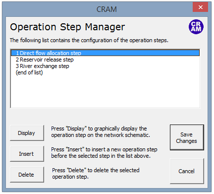

Model Basics¶
Network Elements¶
CRAM uses 8 types of objects to represent real-world systems.
Nodes: Nodes are general-purpose elements within the model network. They are used along with links to build a model network that represents a real-world system. Mass balance nodes are a special type of node added automatically by CRAM. They are connected to inflows and demands and are used to maintain mass balance.
Links: Links are general-purpose elements most often used to simulate rivers or canal reaches. They are also used as arbitrary connectors between two nodes.
Inflows: Inflows represent flow into a network. They are frequently used to represent a raw water supply such as a river.
Demands: Demands represent flow out of a network. They are frequently used to represent withdrawals from a system such as a diversion ditch or water right.
Reservoirs: Reservoirs represent storage within a system. They are more complex than other network elements, requiring nodes and links for proper configuration.
Decrees: Decrees are used to model water rights. They can be used to represent the limits on total annual diversion to canals, to set annual filling limits on water rights into reservoirs, or to limit supplemental water to an annual limit without having to determine in which months it might be needed.
Return Flows: Return flows represent water that leaves the surface water system at one location but then returns at another location and possibly another time.
Instream Flows: Instream flows represent the minimum water that must be available in a river, for example to support fish health.
Data Objects are an additional type of model object that can be added to the network. They are used to track model output and do not affect the configuration or solution of the model. That is to say, Data Objects don’t connect with a To Node and From Node within the network.
The Network Schematic¶
The network schematic shows the physical connections in the model network. It is the user interface for CRAM, displaying a graphical representation of the links and nodes that represent the system. This includes inflows, reservoirs, demands, return flows, and groundwater use. Click the image below for a full resolution network schematic.
{kind=link}
The network schematic is an interactive interface for building the model and editing model parameters. It allows the user to access most locations in the model. For instance, clicking on Link 15 opens a pop-up that lists the link name, how it’s connected in the model (From Node, To Node), and the types of output it should have. This is shown in the image provided below.
The User Input Sheet¶
The user input sheet contains the settings for a model. This allows the user to run the model, set model parameters, and show additional model details to name a few. The complexity of this sheet is dependent on the complexity of the model.
The user sheet can set the level of detail in the model, with the “Basic User” hiding most model sheets as discussed in the CRAM Worksheet Names section. The “Advanced User” reveals the timeseries data sheets within the model and “Developer” mode unhides all of the sheets in a model workbook.
Time Steps¶
CRAM can be operated at any time step; however, daily, weekly, and monthly are the most common.
CRAM operates using a two time step hierarchy: the major time step and the minor time step. These two modeling concepts are used to represent real-world time periods. For example, a common model representation would be that the major time step represents years and the minor time step represents months.
The minor time step is where most of the work gets done - CRAM solves the network once or more at each minor time step. The major time step is a concept used to organize data for the minor time steps.
Operation Steps¶
Operations steps are used to build complex system operations that are often involved with water rights, reservoirs and exchanges. More information on the use of operation steps can be found in the Model Details documentation.
User Code¶
Since CRAM runs within Excel, VBA code can be used to check and changes values in the model while it is running. These functions allow the user to intercept the execution of the model at various points to allow the use of macros. This is useful for creating customized conditions based on complex system operations. More information on the user code can be found in the Model Details documentation.
CRAM Worksheet Names¶
Most of the CRAM model data (time series data, model parameters, network connections) are stored within Excel worksheets. The worksheets have been listed in the tables below based on their functionality within in the model. By default many of these sheets are hidden to users. This functionality can be changed via the Worksheet Dictionary.
Standard CRAM Sheets: This is the core functionality within CRAM. Do not rename or delete these sheets.
Sheet Name |
User Level |
Description |
|---|---|---|
User Controls |
Basic |
Contains settings for the model, most recent run. |
Network Schematic |
Basic |
Contains the Network diagram. |
Worksheet Output Template |
Basic |
Contains list of elements to export to output file. |
Worksheet Dictionary |
Basic |
Controls sheet visibility. |
Model Workbook Version History |
Basic |
Worksheet to track changes to model workbook. Manually updated by users. |
Output Sheet |
Basic |
Worksheet to store model results for model run. CRAM raw output. |
Internal CRAM Sheets: These sheets are hidden in the default “Basic User” settings. Do not rename or delete these sheets.
Sheet Name |
User Level |
Description |
|---|---|---|
Global Data Sheet |
Developer |
Contains settings for CRAM model, global variables for model execution, most recent run and dialog box settings. |
Node Sheet |
Developer |
Contains text data used in node dialog box. |
Link Sheet |
Developer |
Contains text data used in link dialog box. |
Inflow Sheet |
Developer |
Contains text data used in inflow dialog box. |
Demand Sheet |
Developer |
Contains text data used in demand dialog box. |
Reservoir Sheet |
Developer |
Contains text data used in reservoir dialog box. |
Time Series Data Sheets: These sheets are automatically created by CRAM as the user builds the model. They are sequentially numbered by CRAM.
Sheet Name |
User Level |
Description |
|---|---|---|
Link n |
Advanced |
Contains time series data for user defined link sheets. |
Inflow n |
Advanced |
Contains time series data for user defined inflow sheets. |
Demand n |
Advanced |
Contains time series data for user defined demand sheets. |
Instream flow n |
Advanced |
Contains time series data for user defined instream flow sheets. |